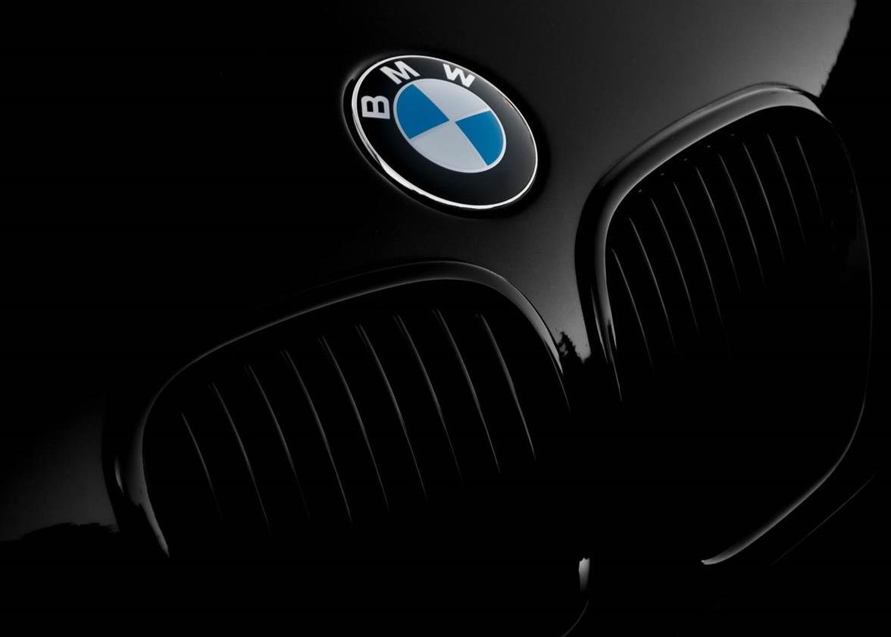
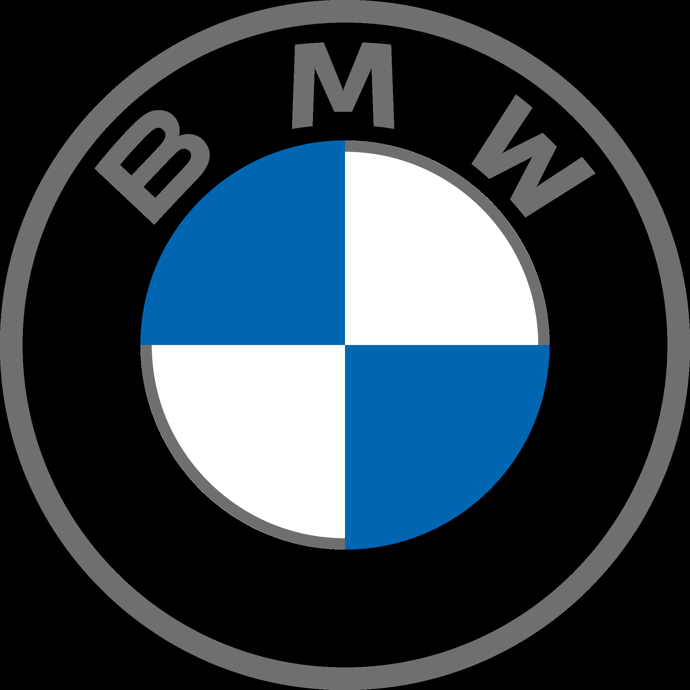

Case Study — Strategic Management
BMW Group: A Strategic Management Analysis
A group research project analyzing BMW's mission and values, sources of competitive advantage, industry positioning, business integration strategy, and global expansion approach.
Overview
This project applies core strategic management frameworks to BMW Group — the German premium automaker behind BMW, MINI, and Rolls-Royce Motor Cars. Working as a team, we examined BMW's mission, vision, and corporate responsibility; the sources behind its competitive advantage; its position in the automotive industry via Porter's Five Forces; its approach to business integration and diversification; and the global strategies and market-entry modes it uses to operate across 40+ countries.
Mission, Vision & Corporate Responsibility
BMW's mission — "to become the world's leading provider of premium products and premium services for individual mobility" — and vision — "to be the most successful premium manufacturer in the industry" — both center on premium quality and customer-defined innovation, backed by values of responsibility, appreciation, transparency, and trust.
- Environmental sustainability: a circular-economy approach to materials, plus an EV push — 13 electric models targeted by 2023, with cars reducing energy use per vehicle by 7.3% and CO₂ emissions per vehicle by 7.8% year-over-year (2021 sustainability report).
- Social responsibility: ~$400M invested in employee training in a single year, university partnerships, and staff-led community volunteering (800+ hours on local projects).
- Ethics & compliance: BMW's global legal compliance code covers competitive behavior, data handling, employee safety, and environmental protection — our analysis recommended pairing it with dedicated ethics officers for consistent global implementation.
Sources of Competitive Advantage
- Efficiency: the BMW i3's 3-phase permanent magnet synchronous motor reaches up to 94% theoretical efficiency, a standout even among EV rivals.
- Quality: every engine undergoes multiple mechanical and tightness tests, with full electronics testing during assembly — backed by a no-cost repair/replacement warranty structure.
- Innovation: an early mover on turbocharged engines, and the BMW i sub-brand pairs performance with reduced emissions.
- Customer responsiveness: after-sales services were rebranded to "Customer Support" in 2020 to reflect a more responsive, tech-enabled service model.
Porter's Five Forces & Generic Strategy
- Threat of new entrants — Low: high capital requirements and steep entry/exit barriers protect established players like BMW.
- Threat of substitutes — Moderate: other transport modes exist, but BMW's brand loyalty and status appeal soften the threat.
- Buyer power — High: government consumer-protection policy and market competition push BMW to stay responsive to feedback.
- Supplier power — Low for BMW: despite raw-material dependency industry-wide, BMW's scale (~12,000 suppliers) gives it leverage to switch suppliers easily.
- Competitive rivalry — High: Mercedes, Audi, and Toyota all compete intensely on quality and innovation.
Per Porter's generic strategies, we concluded BMW follows a cost-focus strategy — targeting specific premium segments at prices below key rivals while maintaining margins through manufacturing efficiency.
Business Integration & Diversification
- Horizontal integration: BMW Group owns MINI and Rolls-Royce Motor Cars, extending its reach across the compact and ultra-luxury segments.
- Backward integration: acquisition of Designworks/USA, in-house EV battery manufacturing, and a lithium supply contract to secure the EV supply chain.
- Forward integration: a shift toward direct B2C digital sales, reducing reliance on dealership middlemen, plus a joint acquisition of HERE for future self-driving capability.
- Diversification: primarily related diversification — BMW Bank (financial/leasing services) and EV-technology licensing both stay tightly linked to the core automotive business.
Global Strategy & Market Entry
BMW blends a localization strategy (adapting to differing regional customer needs) with a transnational strategy (balancing local responsiveness against cost pressure) — reflected in subsidiaries across 41 countries and market-specific pricing/discount structures.
- Direct exporting: BMW's most common entry mode, offering high profit and control in foreign markets.
- Joint ventures: used in China to navigate political/regulatory constraints — at the cost of some control and IP-leakage risk.
- Wholly owned subsidiaries: used in markets like Denmark for full operational control.
Key challenges identified: intensifying competition from Mercedes and Porsche, the industry-wide race toward smart/eco-friendly vehicles, and political risk tied to operating across dozens of regulatory environments.